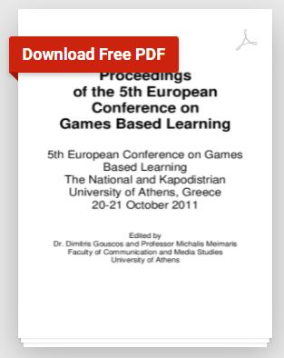

An Introduction to the Usage of Games in Education
The usage of games as an alternate medium
for education is an approach that should
be followed more. There have already been a
multitude of studies
on it:

Designing Serious Games for Education:
From Pedagogical Principles to Game Mechanisms
focuses on the effects that Serious Games have on players.
Serious Games are games where the focus is not for
entertainment but rather for another primary purpose,
such as educating the player on topics like military
situations, scientific explorations, emergency
management, and engineering.
Utilising an Educational Framework for the
Development of Edutationment Scenarios
elaborates on a structure which can be used for
creating and operating educational games. It focuses
on combining human-computer communication,
interaction/educational design, entertainment studies
and practical approaches to game development in order to
create custom edutainment scenarios.